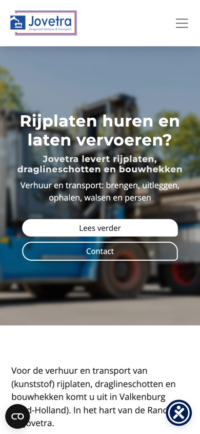
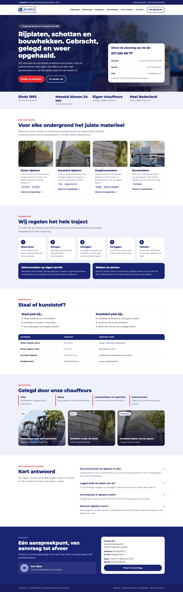
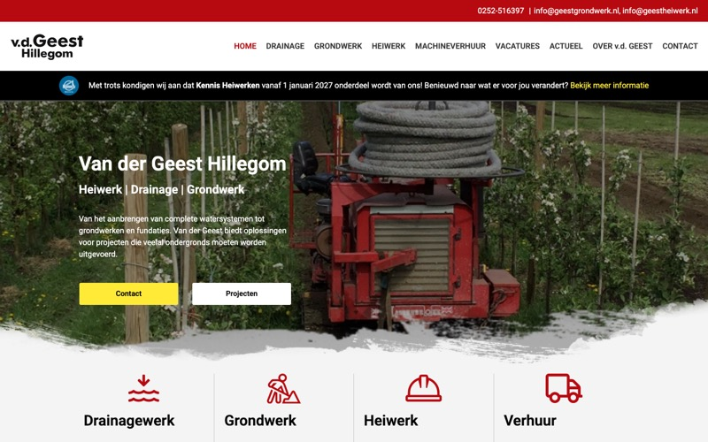
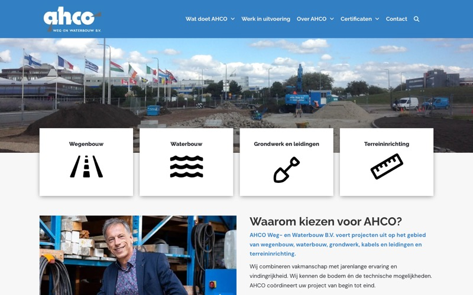
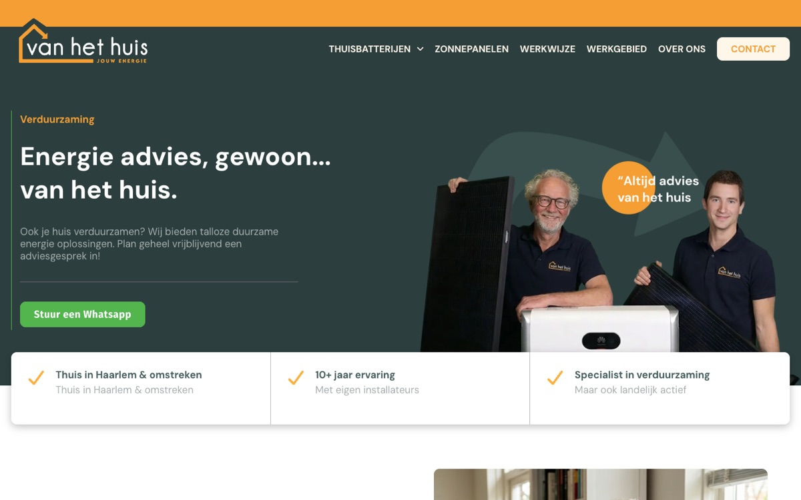
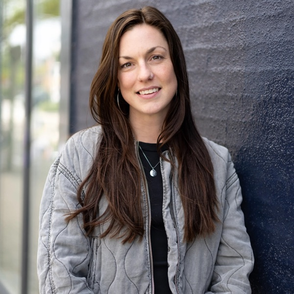

Jullie leveren binnen 24 uur. De site doet er 7 seconden over.
Ruud, je vroeg Pascale hoe Jovetra gevonden wordt in AI. Ik heb het uitgezocht, samen met ons team: hoe snel jovetra.nl is, wat Google ziet, en wat ChatGPT en Google antwoorden als een aannemer rijplaten zoekt.

Een eerste schets: zo kan jovetra.nl eruitzien. Het echte ontwerp maken we samen.
Drie jaar samen aan de online marketing
Sinds 2023 verzorgt het team van Foome de online marketing van Jovetra. Elke maand een blog, posts op LinkedIn en een vaste rapportage. Foome en ditisABC gaan samen verder, dus dat werk loopt gewoon door.
Wat het oplevert
LinkedIn groeit, post na post
Bijna elke week een post. Het bereik per post steeg van gemiddeld 435 naar 560 en de pagina won er 31 volgers bij. De chauffeurs en de eigen geschiedenis doen het het best: de post over de eerste rijplatenvrachtwagen uit 1996 werd 1.154 keer gezien.
De blogs zijn de best gevonden pagina's
De blog over rijplaten versus draglineschotten trekt meer bezoekers uit Google dan welke andere pagina van jovetra.nl ook, de homepage inbegrepen.
AI gebruikt de blogs als bron
In onze meting halen ChatGPT en Google hun antwoord over draglineschotten en kwetsbare ondergronden deels van jovetra.nl. De basis voor gevonden worden in AI ligt er dus al.
Korte lijnen met Ruud en Jack
Een gedeelde contentkalender, onderwerpen die Ruud aandraagt en een belletje met Jack als er iets moet wijzigen. Zo blijven de posts dicht bij het werk van elke dag.
LinkedIn: statistieken van de bedrijfspagina, november 2025 tot en met oktober 2026; bereik per post oktober 2025 tot en met maart 2026 tegenover april tot en met oktober 2026. Bezoekers per pagina: Ahrefs, oktober 2026, schattingen. AI-bronnen: onze eigen meting, 27 oktober 2026.
Die basis staat. Wat nu remt, is de website zelf. Daar gaat de rest van deze pagina over.
Op een telefoon staat de homepage pas na 7 seconden in beeld
Jullie klanten zoeken vaak op de bouwplaats, op hun telefoon. Daar is jovetra.nl traag. Op een computer valt het mee, en dat is precies waarom het minder opvalt.
Gemeten met Lighthouse op mobiel en desktop, homepage drie keer op mobiel. De server-wachttijd is ook gemeten met losse verzoeken.
Wat we verder zagen
Het adres staat nergens op de site
Telefoon, mail en openingstijden wel, Voorschoterweg 52A niet. Ook de gegevens in de code noemen alleen naam, logo en LinkedIn. Google en AI koppelen Jovetra daardoor lastig aan Valkenburg en de Randstad.
Vier producten, één tekst
Op de homepage staat bij stalen rijplaten, kunststof rijplaten, draglineschotten én bouwhekken: "Grote en kleine rijplaten. Voor uw bouwterrein en platenbaan." Een snelle tekstaanpassing, en meteen beter te lezen.
Twintig goede antwoorden die AI niet als antwoord herkent
De veelgestelde vragen zijn sterk: levering meestal binnen 24 uur, 24/7 bij spoed, geen vaste huurperiode. In de code staan ze niet als vraag en antwoord, en zonder een klik zijn ze dicht.
Een aanvraag per product ontbreekt
De FAQ zegt: vraag een offerte aan "via het formulier op onze website". Dat is een algemeen contactformulier met naam, mail en bericht. Een aanvraag met soort, aantal, periode en locatie scheelt de planning een belletje.
Inzoomen op de telefoon staat uit
De site blokkeert in de code het inzoomen, op elke pagina. Voor wie slechter ziet is dat lastig, en het telt mee in de toegankelijkheidsregels (WCAG 1.4.4). Daarnaast dekken de knoppen voor cookies en toegankelijkheid onderin de tekst af.

Tot een nieuwe site live staat, lopen we deze snelle winst graag door met jullie huidige websitebeheerder.
Een eerste schets van jovetra.nl
Dit is een schets, geen ontwerp. We maakten hem op basis van jullie huidige site, om te laten zien waar het naartoe kan: bovenaan wat Jovetra doet en de planning direct aan de lijn, daaronder het materieel met maten, de werkwijze van reserveren tot ophalen, een keuzehulp voor staal of kunststof, projecten van de chauffeurs en het adres in beeld. Scroll er gerust doorheen.
Het echte ontwerp maken we samen. In de eerste fase bespreken we jullie materieel, klanten en wensen, en ontwerpen we de homepage en een productpagina. Die schaven we in twee feedbackrondes bij. Pas daarna bouwen we. Wat wil jij er zelf in terugzien?

Gebouwd om gevonden te worden: elke pagina wint een vraag
Een pagina per product en per vraag die jullie klant stelt. In Google en aan ChatGPT.
| Pagina | Zoekvraag in Google | Per maand | Vraag aan AI |
|---|---|---|---|
| Home | rijplaten huren | 600 | "Waar kan ik rijplaten huren voor een bouwproject op een zachte ondergrond?" |
| Stalen rijplaten | rijplaten | 800 | "Ik zoek een bedrijf dat stalen rijplaten verhuurt én uitlegt op locatie" |
| Kunststof rijplaten | kunststof rijplaten huren | 400 | "Kunststof of stalen rijplaten: wat is beter voor een evenemententerrein?" |
| Draglineschotten nu al gevonden | draglineschotten | 400 tot 700 | "Wat zijn draglineschotten en wanneer gebruik je die?" |
| Bouwhekken | bouwhekken huren | 600 | "Bouwhekken huren voor de afscherming van een werkterrein" |
| Spoed en transport | rijplaten verhuur | 200 | "Welk bedrijf verhuurt rijplaten én verzorgt transport via één contactpersoon?" |
| Kennisbank de blogs van Anouk | dragline schotten | 300 | "Hoe bescherm ik een kwetsbare ondergrond met zwaar materieel?" |
Zoekvolumes: Ahrefs, Nederland, oktober 2026, schattingen. Elke pagina krijgt een eigen titel, omschrijving en hoofdkop, maten in een tabel, veelgestelde vragen, en bedrijfsgegevens die Google en AI kunnen lezen.
AI kent jullie naam, maar noemt jullie nog niet
We stelden 8 vragen die een aannemer, loonbedrijf of evenementorganisator stelt aan ChatGPT, Google AI Mode en de AI-antwoorden bovenaan in Google. Dat zijn 24 antwoorden. Wie naar Jovetra zelf vraagt, krijgt een goed antwoord. Op de klantvragen wordt Jovetra 1 keer genoemd.
| Vraag van de klant | ChatGPT | Google AI Mode | AI in Google |
|---|---|---|---|
| Waar kan ik rijplaten huren voor een bouwproject op een zachte ondergrond? | nee | nee | nee |
| Ik zoek een bedrijf dat stalen rijplaten verhuurt én zelf uitlegt op locatie | nee | nee | nee |
| Welk bedrijf verhuurt rijplaten én verzorgt transport en ophalen via één contactpersoon? | genoemd | nee | nee |
| Ik heb met spoed rijplaten nodig, kan dat dezelfde dag? | nee | nee | nee |
| Kunststof of stalen rijplaten: wat is beter voor een evenemententerrein? | nee | nee | nee |
| Wat zijn draglineschotten en wanneer gebruik je die op een bouwplaats? | als bron | nee | nee |
| Hoe bescherm ik een kwetsbare ondergrond bij zwaar materieel? | nee | als bron | nee |
| Bouwhekken huren voor afscherming van een werkterrein | nee | nee | nee |
Onze eigen meting, 27 oktober 2026, Nederlandse vragen. "Als bron": AI gebruikt een pagina van jovetra.nl, maar noemt Jovetra niet als verhuurder. Die meting herhalen we elke maand.
Het goede nieuws: precies de vraag over één contactpersoon voor huur én transport, jullie sterkste punt, levert al een noemer op. En de blogs werken: ChatGPT en Google gebruiken ze als bron. Wat nu ontbreekt, is een site die zegt wie jullie zijn, waar jullie zitten en wat het materieel kan.
Bezoekers uit Google per maand
Ahrefs Site Explorer, Nederland, 27 oktober 2026. Schattingen.
Waar jullie klanten op zoeken
| Zoekwoord | Per maand | Moeilijkheid |
|---|---|---|
| kunststof rijplaten | 800 | 14 |
| rijplaten | 800 | 6 |
| bouwhekken | 700 | 22 |
| rijplaten huren | 600 | 0 |
| bouwhekken huren | 600 | 0 |
| kunststof rijplaten huren | 400 | 5 |
| bouwhek huren | 350 | 0 |
| rijplaten verhuur | 200 | 7 |
| draglineschotten huren | 150 | 0 |
Moeilijkheid op een schaal van 0 tot 100: alles hier is laag. Samen zo'n 4.000 zoekopdrachten per maand. Ahrefs, oktober 2026, schattingen.
Klein in Google kan groot zijn in AI
Plaisier haalt maar zo'n 550 bezoekers per maand uit Google, maar is in onze meting de bron die AI het vaakst gebruikt. Duidelijke pagina's per product wegen voor AI zwaarder dan veel bezoekers. Dat is goed nieuws voor Jovetra.
| Partij | Bezoekers uit Google | Zoekwoorden | Als bron in AI-antwoorden |
|---|---|---|---|
| FVR Tradingfvr-trading.nl | 10.010 | 982 | 2 van 24 |
| Sijperda Verhuurbreed verhuurbedrijf | 5.115 | 750 | 1 van 24 |
| De Rijplatenspecialist | 1.967 | 84 | 2 van 24 |
| LVV Trading | 1.301 | 60 | 6 van 24 |
| PVM Tradinggoed vindbaar op "rijplaten huren" | 762 | 90 | 1 van 24 |
| Plaisier | 556 | 41 | 7 van 24 |
| Russcher Staphorst | 120 | 12 | 5 van 24 |
| Jovetra | 37 | 8 | 3 van 24, 1 keer genoemd |
Bezoekers en zoekwoorden per maand: Ahrefs, Nederland, 27 oktober 2026, schattingen. AI-bronnen: onze eigen meting, 27 oktober 2026.
Vier pagina's die het goed doen
Klik ze gerust open. Ze laten zien waar Google en AI op letten.
Russcher Staphorst: rijplaten
Eén pagina met maten en gewicht per type plaat, de werkwijze in vier stappen, projecten, veelgestelde vragen en het adres. In onze meting de pagina van een concurrent die AI het vaakst als bron gebruikt.
Plaisier: rijplaten huren
Een vanaf-prijs per plaat per dag, de levertijd, en een eigen pagina voor elk product en elke vraag: prijs, leggen, walsen. AI gebruikt negen verschillende pagina's van Plaisier.
LVV Trading: kennisbank
Artikelen met een korte samenvatting bovenaan, vragen als tussenkop, een naam en een datum. Precies de vorm waaruit AI graag een antwoord haalt.
PVM Trading: rijplaten huren 3 x 1 meter
Eén plaat, één pagina: maat, gewicht, belasting tot 60 ton, huurperiodes en veelgestelde vragen. Deze pagina haalt de meeste bezoekers van PVM binnen op "rijplaten huren".
Wat ze gemeen hebben: per product een eigen pagina, met de cijfers die een aannemer zoekt. Jovetra heeft de kennis en het materieel al; op de nieuwe site krijgt dat dezelfde vorm.
AI-bronnen: onze eigen meting, 27 oktober 2026. Bezoekers PVM: Ahrefs, oktober 2026, schatting.
Waar Jovetra kan winnen
Draglineschotten: daar wordt Jovetra al gevonden
Dankzij de blogs is de pagina over rijplaten versus draglineschotten de best bezochte van de site. Wat daar werkt, kan ook voor rijplaten en bouwhekken.
Huur én transport, één aanspreekpunt
Veel verhuurders leveren alleen materieel. Jovetra brengt, legt uit, verlegt en haalt op, met één vast aanspreekpunt. Op precies die vraag noemt ChatGPT jullie al. Dat verdient een eigen pagina.
Weinig concurrentie op de grote zoekwoorden
"Rijplaten huren" en "bouwhekken huren" hebben samen 1.200 zoekopdrachten per maand en een moeilijkheid van 0. Ook kleinere verhuurders zijn daarop goed te vinden.
Sinds 1993. Eén aanspreekpunt. Dag en nacht klaar.
"We komen onze afspraken na en staan dag en nacht voor u klaar."
Van jullie eigen pagina Over Jovetra. Een belofte die een uitvoerder met spoed wil lezen, en die op de nieuwe site bovenaan hoort.Een vraag aan jullie: hoe willen jullie de band met Jongeneel Transport verteld hebben? De site zegt nu "Jongeneel Verhuur en Transport" en elders "geen deel van Jongeneel Transport". Voor AI zijn dat twee verhalen. Eén helder verhaal helpt.
En: welk materieel of welke klantgroep willen jullie laten groeien? Staal, kunststof, schotten of bouwhekken, infra, bouw of evenementen? Daar bouwen we de site omheen.
Ruud, nog één: Jongeneel Transport bestaat dit jaar 70 jaar. Mooi. Als we daar ook mee kunnen denken, over de site of over het vinden van chauffeurs, doen we dat graag.
Eerst een snelle site, dan elke maand beter gevonden
Naast LinkedIn en de blogs stellen we dit voor:
Een nieuwe, snelle website
- Een pagina per product, met maten, gewicht en toepassing in een tabel, en een prijsaanvraag per product: soort, aantal, periode en locatie.
- Het adres en de bedrijfsgegevens in beeld én in de code, de veelgestelde vragen als vraag en antwoord, en een keuzehulp staal of kunststof.
- Een projectenpagina met het beeld van jullie chauffeurs, dat nu alleen op LinkedIn staat.
- Onder de 2,5 seconden op een telefoon, en toegankelijk volgens WCAG 2.2.
- Gehost op onze eigen servers, speciaal voor WordPress. Dan zijn wij volledig verantwoordelijk voor snelheid, beveiliging, updates en back-ups, en houden jullie alle beheerdersrechten. Eigen hosting kan ook, dan zonder technisch onderhoud door ons.
Content voor Google en AI
- De blogs van Anouk krijgen een vaste vorm: één klantvraag per artikel, het antwoord in de eerste twee zinnen, met maten en voorbeelden.
- Een kennisbank op de nieuwe site, met de blogs die nu al als bron gebruikt worden.
- LinkedIn met projectbeeld van de chauffeurs, met een link naar het project op de site.
Meten en bijsturen
- Elke maand dezelfde 8 klantvragen in ChatGPT en Google AI: wie wordt genoemd, en welke bronnen gebruikt AI.
- Zoekposities en bezoekers uit Google Search Console, niet uit schattingen.
- Een jaarrapportage met Ruud en Jack, en de aanpak voor het jaar erna.
Waarom wij
Site en content uit één team
Anouk schrijft de blogs en kent jullie materieel en klanten. Bij ons zit zij naast de mensen die de site bouwen. Wat zij schrijft, landt dan op een site die is gemaakt om gevonden te worden.
Snel, en dat blijft het
We bouwen in WordPress en hosten op onze eigen servers, speciaal voor WordPress. Snelheid meten we niet één keer bij oplevering, maar houden we bij.
We kennen jullie klanten
Wij maakten de websites van Van der Geest in Hillegom (drainage, grondwerk, heiwerk) en AHCO in Lisse (weg- en waterbouw). Bedrijven uit jullie eigen klantgroep.
Gemeten in Google én AI
Google Partner, en elke maand een eigen meting van wat ChatGPT en Google AI over jullie zeggen. Je ziet zwart op wit wat het oplevert.
Werk dat we eerder deden

Van der Geest HillegomDrainage, grondwerk, heiwerk en machineverhuur. Website door ditisABC, met een pagina per dienst, projecten, actueel en vacatures.
AHCO Weg- en WaterbouwWegenbouw, waterbouw, grondwerk en leidingen in Lisse. Website door ditisABC, met werk in uitvoering, certificaten en vacatures. Wij beheren de site ook.
Van het HuisZonnepanelen, thuisbatterijen en warmtepompen in Haarlem. Nieuwe website in WordPress, met een pagina per dienst, een kennisbank, een werkgebiedpagina en direct contact via WhatsApp. Opgeleverd april 2026.Zo bouwen we samen, in drie stappen
Kennismaking en ontwerp
We bespreken jullie materieel, klanten en verhaal. Jullie krijgen de sitemap en een ontwerp van de homepage en een productpagina, en die schaven we samen bij.
Bouw en teksten
We bouwen in WordPress, op onze eigen servers. Elke pagina krijgt teksten die passen bij de vraag van de klant, en de gegevens die Google en AI lezen. Jullie huidige pagina's sturen we door, zodat wat nu goed scoort, zoals de draglineschotten, zijn plek houdt.
Training en livegang
We leren jullie hoe je zelf aanpast, geven alle beheerdersrechten en gaan live. Daarna houden we de site technisch bij, en kunnen jullie altijd bij ons terecht.
Het verlengde van jullie team
Geen losse freelancer, maar een team van specialisten uit Hillegom, op 25 minuten van Valkenburg. Anouk is jullie vaste aanspreekpunt. Achter haar staat het hele team, voor de website, Google, AI en techniek.


Onderdeel van jullie team
We draaien mee in jullie planning, met korte lijnen naar Valkenburg. Een mooi project of nieuw materieel? We horen het meteen, en het staat dezelfde week online.
Specialisten onder één dak
Website, hosting, Google, AI en content. Wie er nodig is, schuift aan. Jullie hoeven niet zelf drie partijen aan te sturen.
Alles open en van jullie
De site, de accounts en de teksten blijven van jullie. Elke maand een rapport in gewone taal.
Snel bereikbaar
Eén appje of belletje naar 023-3020409 en het team ziet je vraag. Mij direct bellen of appen mag natuurlijk ook.
Bouwen in de winter, gevonden in het voorjaar
Jullie drukste periode is de zomer. Een nieuwe site die in de winter wordt gebouwd, staat in het voorjaar live en heeft dan een paar maanden om te groeien in Google en AI, vóór de drukte begint. Zullen we de vervolgstap plannen?
Michel Goulmy
Eigenaar van ditisABC
Voor het snelste antwoord bel of app je ons team, of mail je naar marketing. Mij direct bellen of mailen mag natuurlijk ook.
Mijn eigen nummer en mail: 06-28530305 · michel@ditisabc.nl
ditisABC · Satellietbaan 41A, Hillegom
Zelf een moment kiezenBij ons op kantoor, videobellen of bellen, direct in mijn agenda
Liever bij jullie in Valkenburg? App ons, dan komen we langs.
Erkenning en partners

Een greep uit onze klanten
 Off Grid Power Stationoffgridpowerstation.nl
Off Grid Power Stationoffgridpowerstation.nl
 Gemeente Culemborgmakelpuntculemborg.nl
Gemeente Culemborgmakelpuntculemborg.nl
 De Centralede-centrale.nl
De Centralede-centrale.nl
 De Ruijtermeubelderuijtermeubel.nl
Candy Festivalcandyfestival.nl
De Ruijtermeubelderuijtermeubel.nl
Candy Festivalcandyfestival.nl
 Miffytownmiffytown.com
Miffytownmiffytown.com

Glanszglansz.nl The Bastardthebastard.com
The Bastardthebastard.com
 Karin Bloemen Stichtingkarinbloemenstichting.nl
Karin Bloemen Stichtingkarinbloemenstichting.nl
Blijf op de hoogte
Meld je aan voor onze nieuwsbrief met handige tips, nieuws van ditisABC en uitnodigingen voor workshops. Afmelden kan altijd.